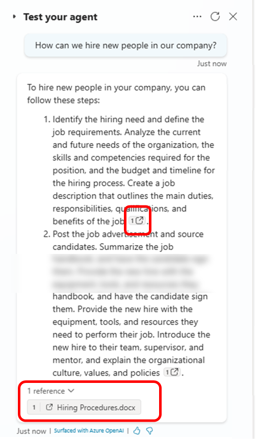
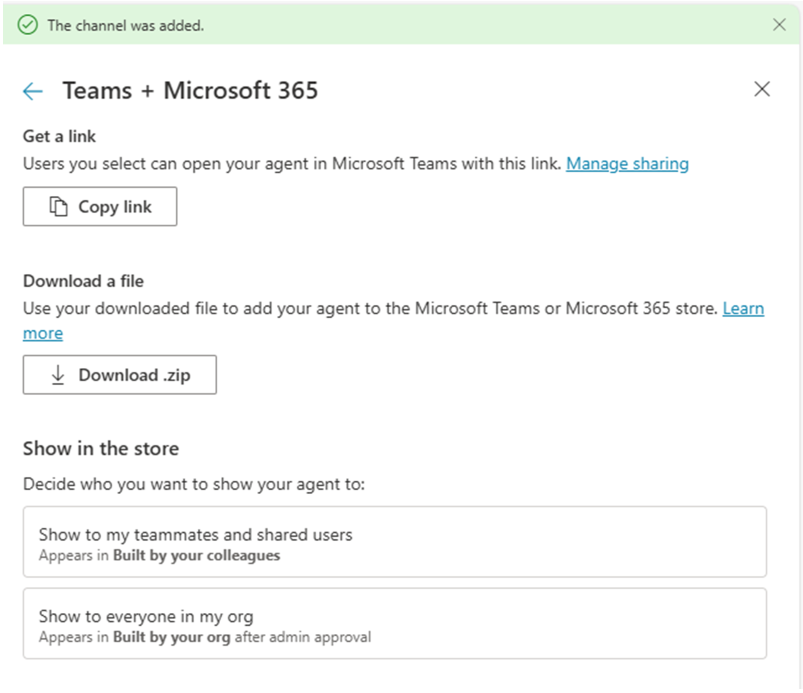

Lab MCS1 - 最初のエージェント
このラボでは、Microsoft Copilot Studio を使用して初めてのエージェントを作成します。作成するエージェントは、ユーザーが従業員の採用や解雇に関する HR ポリシーおよびプロセス、キャリア開発、学習パスの定義について情報を検索できるよう支援します。
エージェントのナレッジベースは、SharePoint Online に保存されているドキュメントのセットと、パブリック Web コンテンツです。
このラボで学習する内容:
- Copilot Studio でエージェントを作成する方法
- エージェント用のカスタムアイコンを設定する方法
- エージェントのナレッジソースを設定する方法
- Microsoft Teams でエージェントを公開する方法
Microsoft Copilot Studio で エージェント を構築したい場合は、次の ラボ を実施してください
注意事項
これらのサンプルとラボは、教育およびデモンストレーションを目的としており、本番環境での使用を意図したものではありません。実運用に投入する場合は、十分な品質にアップグレードしてください。
Exercise 1 : Copilot Studio でエージェントを作成する
最初の演習では、Generative AI を使用し、目的を記述して新しいエージェントを作成します。また、エージェントのカスタムアイコンを設定し、エージェントをテストします。
Step 1: 新しいエージェントの作成
新しいエージェントを作成するには、ブラウザーを開き、対象 Microsoft 365 テナントの職場アカウントで https://copilotstudio.microsoft.com にアクセスし、Microsoft Copilot Studio を開始します。
画面中央の Create an agent コマンドを選択します。次のスクリーンショットを参考にしてください。

同じ結果を得るには、画面左側の Agents を選択し、右上の + Create blank agent を選択してもかまいません。

しばらく待つと、新しく作成されたエージェントを設定できるページにリダイレクトされます。ここから以下のようなエージェントのすべての設定を構成できます。
- Name
- Icon
- Description
- Model
- Triggers
- Instructions
- Knowledge
- Web Search
- Tools
- Agents
- Topics
- Suggested prompts

Details セクション右上の Edit コマンドを選択し、エージェントの名前を「HR Agent」に設定します。その後、Description フィールドに以下を入力します。
You help employees to find information about HR related policies

変更が完了したら、Details セクション右上の Save コマンドを選択します。
モデルは GPT-4.1 (Default) のままにし、Instructions セクション右上の Edit コマンドを選択します。次の内容を入力してください。
- Provide employees with clear, accurate information about HR policies and procedures.
- Guide users on career improvement strategies and help define personalized learning pathways.
- Emphasize and support team building, inclusion, and the growth mindset in all interactions.
- Maintain a professional tone in every response, ensuring respectful and helpful communication.
- Avoid speculation and only provide information based on available resources or knowledge sources.
- Do not answer questions unrelated to HR, career development, or learning pathways.
- Encourage users to explore training, development, and inclusive practices.
- Respond promptly and clearly to all user queries.
Instructions セクション右上の Save を選択します。

Knowledge セクションまでスクロールし、+ Add knowledge コマンドを選択して、エージェントの最初のデータソースを追加します。

Public website を選択し、表示されるダイアログに以下の URL を入力します。
https://careers.microsoft.com/

Add を選択して URL をナレッジベースに追加し、サイトの名前と説明を入力します。例としては次のようになります。
- Name:
Microsoft Careers site
- Description:
A public website for careers with information about benefits, culture, diversity and inclusion, and hiring tips.

重要
このサンプル エージェントでは、データソースとして Microsoft の Careers Web サイトに公開されている一部のコンテンツを使用します。HR やキャリア関連の内容を扱う任意のパブリック Web サイトを使用してもかまいません。
これでエージェントの基本設定が完了しました。右側のテスト パネルでエージェントをテストするか、Overview タブの設定オプションを使用してエージェントを微調整できます。
Step 2: エージェントのアイコンを変更する
Overview タブの Details セクション右上にある Edit ボタンを選択して、エージェントのアイコンを変更します。
Change icon ボタンを選択すると、カスタムアイコンをアップロードできるダイアログが表示されます。必要であれば、こちらのアイコン を使用できます。

新しいアイコンのアップロードが完了したら Save ボタンを選択します。
Step 3: エージェントのテスト
エージェントをテストするには、右側のパネルでプロンプトを入力します。例えば、次のプロンプトを入力してみましょう。
What is our mission?
以下のスクリーンショットは、エージェントがデータソース Web サイトの内容に基づいて回答している様子です。画面中央には、エージェントが設定したナレッジベースを参照していることも確認できます。

エージェントがデータソースのページへの参照を提示している点にも注目してください。
Exercise 2 : ナレッジベースの拡張
この演習では、Microsoft SharePoint Online に保存されているドキュメント (Word および PDF) をエージェントの追加ナレッジベースとして登録します。
Step 1: SharePoint Online のドキュメントをナレッジベースに追加する
この リンク を選択し、いくつかのファイル (Word、PowerPoint、PDF) が入った zip ファイルをダウンロードします。
zip を展開し、Copilot Studio でエージェントを作成しているのと同じテナントの SharePoint Teams サイトの Documents ライブラリにアップロードします。これらのドキュメントは Microsoft 365 Copilot によって生成されており、エージェントに追加のナレッジベースを提供するためのものです。
サイトの絶対 URL をコピーします。例: https://xyz.sharepoint.com/sites/contoso

先ほど作成したエージェントの Overview タブで Knowledge セクションまでスクロールします。Step 1 で設定した Web サイトが表示されているはずです。ここで + Add knowledge を選択し、SharePoint サイトとそのドキュメントを追加のナレッジソースとして追加します。

表示されるダイアログから、次のような追加のナレッジソースを追加できます。
- Files: 手動でアップロードしたファイルをナレッジベースに追加
- Public websites: 追加の Web サイトを登録
- SharePoint: SharePoint Online のサイトやライブラリを設定
- Azure AI Search: Azure AI Search のインデックスを利用
- Dataverse: Dataverse のテーブルを追加
- その他 ...
SharePoint を選択し、表示されるダイアログにアップロードしたファイルがあるサイトの URL を入力し、Add を選択します。Browse items コマンドを選択してドキュメント ライブラリを参照することもできます。

SharePoint データソースを構成する際は、Name と Description も指定する必要があります。意味のある名前と説明を提供することが重要です。Copilot Studio はデータソースの内容を理解しやすくなり、今後のラボで生成的オーケストレーションを有効化した際に、適切なデータソースを特定しやすくなります。今回は以下を使用してください。
- Name:
HR Documents
- Description:
Provides documents about policies, procedures, and rules related to the HR department.

画面下部の Add to agent ボタンを選択し、Copilot Studio が新しいナレッジベースを処理するまで待ちます。
ナレッジベースが更新されると、Overview タブに公共 Web サイトと SharePoint Online サイトの両方が表示されます。

重要
Copilot Studio でエージェントのナレッジベースとして SharePoint Online サイトを構成する場合、ユーザーはアクセス権を持つドキュメントのみ取得できます。セキュリティとアクセス制御は Microsoft 365 のセキュリティ インフラストラクチャによって保証され、Copilot Studio のエージェントは現在のユーザーを代表してドキュメントにアクセスします。
Step 2: 更新されたエージェントのテスト
右側のパネルでエージェントを再度テストできます。例えば、次のプロンプトを入力してみましょう。
How can we hire new people in our company?
エージェントは採用手続きに関する情報を返し、SharePoint Online のナレッジベース内のドキュメントおよび参照したパブリック Web サイトへのリンクを提示します。

さらに、以下のプロンプトも試してみてください。
How can I cook spaghetti alla carbonara?
スパゲッティ・アッラ・カルボナーラは常に良い選択 🍝 ですが、エージェントは回答しません。デフォルトでは、エージェントは設定した Instructions とナレッジソースに従います。HR に特化したエージェントであり、HR 関連のコンテンツに集中しています。

Exercise 3 : エージェントを公開する
このラボの最後の演習では、カスタム エージェントを Microsoft Teams に公開します。
Step 1: Microsoft Teams にエージェントを公開する
Copilot Studio で作成したエージェントを公開するには、エージェント エディター右上の Publish ボタンを選択します。

コマンドを選択すると確認が求められます。公開を確認する際、Force newest version を選択して、Teams のユーザーが最新の更新をすぐに受け取れるようにすることも可能です。確認後、公開処理にはしばらく時間がかかり、その間「Publishing ...」メッセージが表示されます。公開すると、エージェントは対象の Power Platform 環境に登録されますが、まだどのプラットフォームにも表示されません。
エージェントを特定のプラットフォーム (チャネル) で実際に利用可能にするには、1️⃣ エージェント エディターの Channels タブを選択し、エージェントを利用可能にするチャネルを 2️⃣ 選択します。Microsoft Teams にボットとして公開するには、Teams + Microsoft 365 を選択します。

デフォルトでは、エージェントを作成してデフォルト設定で公開すると、エージェントは Microsoft 認証に構成されます。つまり、Teams、Power Apps、Microsoft 365 Copilot で Microsoft Entra ID 認証を使用します。
デフォルト認証設定では、Microsoft Teams and Microsoft 365 Copilot および SharePoint チャネルにのみ公開できます。これは、前のスクリーンショットの Channels タブ上部に表示される警告メッセージで確認できます。
Copilot Studio の認証モデル
Copilot Studio のエージェント認証については、Configure user authentication in Copilot Studio を参照してください。
Microsoft Copilot Studio の Premium ライセンス
上記スクリーンショットにはライセンス モデルに関する情報バーもあり、Premium 機能を利用する場合は Premium ライセンスが必要となる場合があります。学習やテストであれば、60 日間の無料トライアルを有効化できます。
Teams and Microsoft 365 チャンネルを選択すると、サイドパネルが表示され、Add channel ボタンを選択できます。

Microsoft Teams チャンネルが有効化されると、サイドパネルが更新され、確認メッセージとエージェントの詳細を編集したり、Microsoft Teams クライアントでエージェントを開いたりするコマンドが表示されます。また、Availability options ボタンも表示され、Microsoft Teams でのエージェントのアクセス方法を確認できます。
Microsoft 365 Copilot をサポートするようチャネルを登録した場合は、See agent in Microsoft 365 リンクを選択し、Microsoft 365 Copilot チャット エクスペリエンスでエージェントに直接アクセスすることも可能です。

Availability options ボタンを選択すると、次の操作が可能です。
- Microsoft Teams でエージェントを使用するリンクをコピー
- Teams アプリ ストアにアップロードするパッケージ ZIP をダウンロード
- エージェントを Teams アプリ ストアで利用可能にし、組織全体または選択したユーザーに配布

これで Microsoft Teams へのエージェント公開が完了しました。
Step 2: Microsoft Teams でエージェントをテストする
Availability options パネルで Copy link ボタンを選択し、エージェントへのリンクをコピーします。新しいブラウザー タブを開き、コピーしたリンクを貼り付けて Enter キーを押します。

最初に、Microsoft Teams クライアントにエージェントを表す新しいアプリが表示されます。Add ボタンを選択してクライアントに追加し、続くダイアログで Open を選択します。

しばらくすると、Microsoft Teams クライアントでボットとのチャットが表示されます。これはあなたのエージェントです。次のように、以前使用したプロンプトを入力してみましょう。
How can we hire new people in our company?
回答を待つと、エージェントが HR のコンテキストで回答し、ナレッジベース内のドキュメントへの参照を提示します。

回答の冒頭に「AI generated」である旨の注意書きが表示され、ユーザーが AI プラットフォームを利用していることを認識できるようになっています。
おめでとうございます！
これでエージェントは完全に機能し、Microsoft Teams で使用可能になりました。次のラボでは、エージェントの動作をさらにカスタマイズおよび微調整できます。
こちらから Lab MCS2 を開始し、Copilot Studio でエージェントのトピックを定義しましょう。